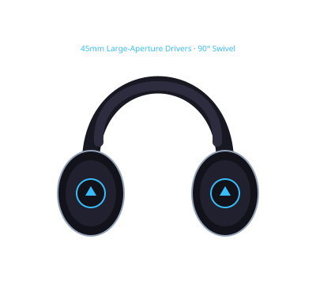

Offbeat editorial photography. Illustrative image, not a photo of the specific product.
Disclosure: This page uses affiliate links. We may earn a commission at no extra cost to you. Full disclosure →
FIT BEFORE FREQUENCY RESPONSE
How should cue headphones feel in a loud room?
Start with the physical fit, how the cups move, and how your mixer’s headphone jack connects. A comfortable seal is personal; no impedance figure or maximum-SPL spec can tell you whether a pair will suit your ears or protect your hearing.
These three picks solve different jobs. Prices below are manufacturer US-page references checked October 2026, not a live retailer quote.
This points to a model worth trying. It cannot judge your head shape, glasses, preferred clamp force or how loud your booth gets.
BEST FIT TO TRY · BOOTHUS manufacturer page · $149.95
Sennheiser HD 25
ON EARRotating capsuleReplaceable parts
A lightweight on-ear form with a rotating capsule for one-ear monitoring and readily available service parts. The split headband can change pressure points—but on-ear clamp is exactly why you should try the fit before a long set.
Volume note: Sennheiser’s 120 dB maximum-SPL figure is a product capability specification, not a safe listening target. Use the lowest workable level and take breaks.
BEST FIT TO TRY · HOME / STUDIOUS manufacturer page · from $159
Audio-Technica ATH-M50x
OVER EAR90° cup swivel3 cables included
A closed-back, around-ear shape that offers an effective passive seal when the pads fit well. The 90° swiveling cups support one-ear cueing, and the three included detachable cables make desk use easier to tailor.
Try with: glasses on, as you would actually mix. The pad seal and pressure can change when frames break the cushion’s contact.
BEST FIT TO TRY · PREMIUM DJPioneer US listing · $449
Pioneer DJ HDJ-X10
OVER EARFlexible swivelReplaceable pads + cables
A flagship over-ear DJ model with a flexible swivel, detachable coiled and straight cables, and replaceable pads. The roomier shape may suit ears that dislike an on-ear clamp; weight and comfort still need a real try-on.
Trade-off: Its official US page lists $449. That premium makes the wear fit and parts you will actually use more important than a wider frequency-response headline.
Made for monitoring in noisy environments, with a rotatable capsule and a split headband. The compact on-ear fit is easy to position for one-ear cueing; it will not feel gentle to every ear during a long set.
Fit
Closed-back · on-ear
Cue move
Rotate the capsule
Service
Replaceable wear parts
Try: wear it for 15–20 minutes and see whether the on-ear pad pressure stays comfortable.
02 / OVER-EAR DESK PAIRFrom $159manufacturer US page

Offbeat technical illustration · not a product photo
Audio-Technica ATH-M50x
An around-ear studio design with a closed-back seal and 90° swiveling cups. Three detachable cables and the included ¼-inch adapter make the desk-to-booth connection flexible.
Fit
Closed-back · over-ear
Cue move
90° cup swivel
Service
Detachable cables
Try: check pad seal and temple pressure with glasses; fit changes how much room sound leaks in.
Offbeat technical illustration · not a product photo
Pioneer DJ HDJ-X10
A roomier over-ear shape with a flexible swivel, replaceable pads, and two detachable cable options. Its nano-coated cushions are designed to wipe clean after a sweaty set.
Fit
Closed-back · over-ear
Cue move
Flexible swivel
Service
Replaceable pads + cables
Trade-off: a $449 manufacturer listing; audition the fit and compare actual retailer returns before paying the premium.
Rig Studio note: The HD 25 and ATH-M50x are selectable in Rig Studio, so those links add the exact catalog item for connector and ownership checks. The HDJ-X10 is not currently a selectable headphone there; its link opens the general setup planner instead and does not claim the model was added.
AT A GLANCE
Use this table as a fit checklist, not a scorecard.
Manufacturer list prices are reference points; retailer price and stock can differ. Fit and isolation are not standardized lab comparisons here.
Model
Cup shape
One-ear cueing
Isolation to check
Comfort / wear
Best starting point
Sennheiser HD 25
On-ear · closed back
Rotatable capsule
Sennheiser describes excellent passive isolation; actual seal varies
Compact pads; on-ear pressure and split-headband fit
Busy booth; try the on-ear pressure
Audio-Technica ATH-M50x
Over-ear · closed back
90° swiveling cups
Closed-back, around-ear passive seal; glasses can break the pad seal
Large pads; three detachable cables
Home / shared studio desk
Pioneer DJ HDJ-X10
Over-ear · closed back
Flexible swivel
Closed-back seal; no measured isolation comparison here
Over-ear fit; replaceable pads + cables
Premium DJ use; audition before spending
The MDR-7506, HDJ-X5 and V-MODA M-100 Master remain alternatives in our under-$100 and professional headphone guides; we have left them out of this three-model fit comparison rather than repeat a weak price/SPL ranking.
A REAL TRY-ON BEATS A SPEC SHEET
A 30-second fit test before checkout.
Wear them with your usual glasses. Check whether the temple breaks the ear-pad seal or creates a hot spot.
Move one cup to your preferred cue position. Can you rotate it without fighting the hinge or the cable?
Check the cable and adapter. Match the headphone plug to your controller or mixer; keep a secure ¼-inch adapter in your gig bag if needed.
Pause and re-seat. After a few minutes, check pressure, heat, slippage and whether the ear pad still seals.
Passive isolation is a fit-and-seal question. Do not crank cue volume to overpower a loud booth. Maximum SPL is not a listening target; lower the level, step away or use hearing protection when appropriate.
FROM SHORTLIST TO YOUR SETUP
Check the headphone jack against the gear you own.
Rig Studio can show the actual headphone connector, any included adapter and what you already own. It does not test comfort or guarantee fit. For the two catalogued models, use the exact add-to-rig links above; for any other pair, open your setup and compare the physical plug before buying.
Neither fits everyone. On-ear cups can be compact and easy to reposition, while over-ear cups surround the ear and may feel less pressurized for some people. Try the pad seal, clamp, glasses fit and swivel motion you will use before deciding.
Does a higher maximum-SPL rating mean safer or better headphones?
No. A maximum-SPL figure describes a product capability, not a recommended listening level or hearing-safety guarantee. Lower the cue level, avoid trying to out-volume a loud booth, and take breaks.
Can I use studio headphones to DJ?
Yes, if they provide a fit and cup movement you can cue with, and their connector suits your mixer. The Audio-Technica ATH-M50x has 90° swiveling cups and detachable cables; it is a closed-back studio monitor that also works for DJ monitoring.
Do I need a ¼-inch adapter?
Check the headphone plug and the actual headphone jack on your controller or mixer. Some headphones include a screw-on adapter; others may require a separate one. Rig Studio lists connector details for the catalogued headphones and the gear in your setup.
Should I buy the Pioneer HDJ-X10 over the HD 25?
Choose by fit, not a blanket winner. The HDJ-X10 is an over-ear flagship with replaceable pads and cables; the HD 25 is a compact on-ear model with a rotating capsule and a long service-parts track record. The X10's current Pioneer US listing is $449, so try it and compare return terms before paying the difference.